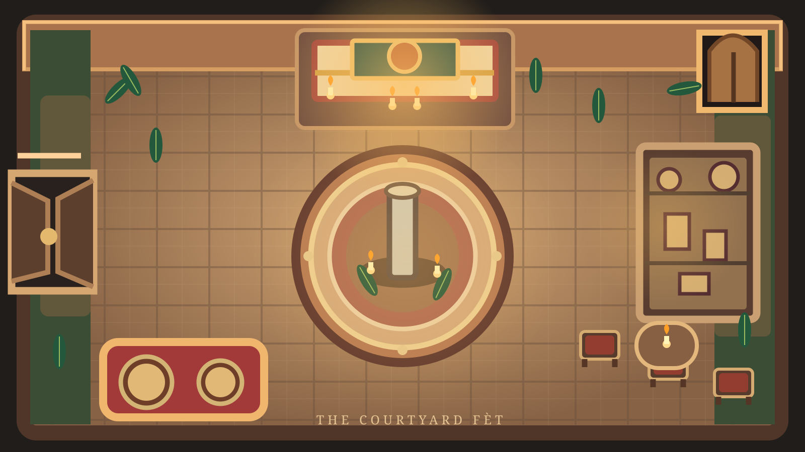

Selected Seeker movement
THE SEEKER'S FIELD JOURNAL
Notes from the Fèt
Keep your clues, conversations, suspicions, and discoveries here. Write as much as you need during the session.

THE SEEKER'S FIELD JOURNAL
Keep your clues, conversations, suspicions, and discoveries here. Write as much as you need during the session.